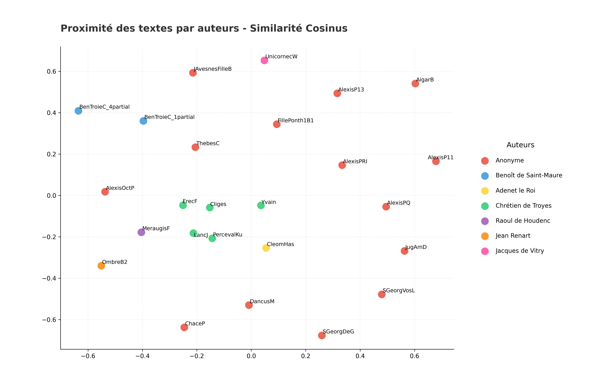

01 — Classification
KNN — Voisinage le plus proche (k=1)
36.0%
Précision (cosinus)
▲ 5 paires les plus proches
0.7465
LancJ (Chrétien de Troyes)
PercevalKu (Chrétien de Troyes)
PercevalKu (Chrétien de Troyes)
0.7119
Cliges (Chrétien de Troyes)
LancJ (Chrétien de Troyes)
LancJ (Chrétien de Troyes)
0.6902
LancJ (Chrétien de Troyes)
ErecF (Chrétien de Troyes)
ErecF (Chrétien de Troyes)
0.6847
Cliges (Chrétien de Troyes)
PercevalKu (Chrétien de Troyes)
PercevalKu (Chrétien de Troyes)
0.6814
Cliges (Chrétien de Troyes)
ErecF (Chrétien de Troyes)
ErecF (Chrétien de Troyes)
▽ 5 paires les plus éloignées
0.0165
ChaceP (Anonyme)
AigarB (Anonyme)
AigarB (Anonyme)
0.0180
AlexisP13 (Anonyme)
AigarB (Anonyme)
AigarB (Anonyme)
0.0183
AigarB (Anonyme)
JugAmD (Anonyme)
JugAmD (Anonyme)
0.0190
AigarB (Anonyme)
UnicornecW (Jacques de Vitry)
UnicornecW (Jacques de Vitry)
0.0190
SGeorgDeG (Anonyme)
AigarB (Anonyme)
AigarB (Anonyme)
02 — Cohésion interne
Similarité moyenne par catégorie
Chrétien de Troyes
0.6289
Similarité moyenne
Anonyme
0.1299
Similarité moyenne
Benoît de Saint-Maure
0.3276
Similarité moyenne
Raoul de Houdenc
N/A
1 seul texte
Adenet le Roi
N/A
1 seul texte
Jean Renart
N/A
1 seul texte
Jacques de Vitry
N/A
1 seul texte
03 — Signatures lexicales
N-grammes caractéristiques par catégorie
Adenet le Roi
à ce
ratio 103.68
pour ce
ratio 98.40
car moult
ratio 95.04
et à
ratio 92.31
de là
ratio 84.00
Anonyme
li quens
ratio 4.26
par mé
ratio 3.21
le rei
ratio 3.10
li pére
ratio 3.07
conte de
ratio 3.02
Benoît de Saint-Maure
e de
ratio 31.70
e mout
ratio 21.50
e plus
ratio 18.50
e si
ratio 18.33
de troie
ratio 16.19
Chrétien de Troyes
messire gauvains
ratio 29.40
an la
ratio 29.04
la reïne
ratio 26.15
vos an
ratio 25.80
si con
ratio 22.61
Jacques de Vitry
cou est
ratio 4.00
li biel
ratio 4.00
la bieste
ratio 4.00
tous iours
ratio 4.00
la falise
ratio 3.84
Jean Renart
por qoi
ratio 4.80
a ami
ratio 4.62
onques mès
ratio 4.00
fet ele
ratio 3.91
son doit
ratio 3.84
Raoul de Houdenc
meraugis qui
ratio 25.00
sen vet
ratio 19.20
por quoi
ratio 17.33
et meraugis
ratio 14.00
li lois
ratio 12.00
04 — Visualisation
Nuages de points (MDS – Similarité Cosinus)
